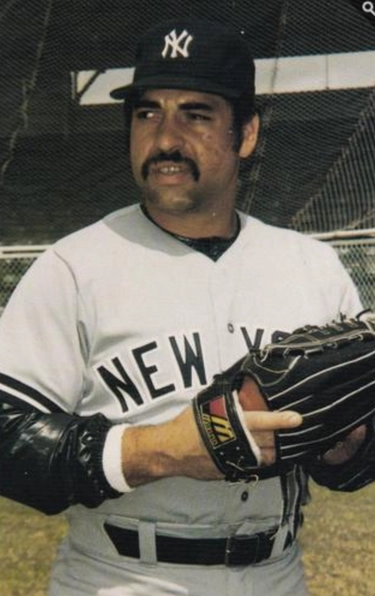

Al Holland "Mr. T"
Career Highlights & Facts
(Facts are AI-generated and may require verification)
- Earned the Rolaids Relief Fireman of the Year award after a dominant season.
- Led the nation with 143 strikeouts and a 0.54 ERA during a standout collegiate season.
- Refused to use bullpen carts, preferring to walk from the bullpen to the mound.
Would you like to find out more about Al Holland?
Player Biography
Al Holland March 6, 2023 / in BioProject - Person 1980s All-Stars / by admin This article was written by Andy Sturgill In January 1983, NBC television debuted a new action series titled The A-Team . The show followed the exploits of a fictional group of former U.S. Army members with such colorful names as Face, Hannibal, and the brawling, straight-talking, ludicrously bejeweled B.A. Baracus, the fictional embodiment of the character’s actor, Mr. T. Within months of the show’s debut, the Philadelphia Phillies would have their own Mr. T in the person of newly acquired relief ace Al Holland. In his first season in Philadelphia, Holland emerged as one of the top relievers in all of baseball, pitching in nearly every close game over the season’s closing months and anchoring a bullpen that led the Phillies to the National League pennant and a trip to the 1983 World Series. Alfred Willis Holland was born August 16, 1952, in Roanoke, Virginia. He is the oldest of four sons born to Charles Holland and Sylvia Bea Waid; he is big brother to Jearold, Glenn, and Coy Holland. After her marriage to Charles was dissolved, Sylvia, a seamstress for a dress company, met and married Richard June Davis, an employee of the Virginia state liquor store system. The family remained in Roanoke, with Al matriculating at Lucy Addison High School, a segregation-era school for African-American students in the area. Holland excelled in football, basketball, and baseball at Addison, and his high school athletic career allowed him the opportunity to compete in both football and baseball at North Carolina A&T State University, a historically black university 100 miles south of Roanoke in Greensboro, North Carolina. He enrolled in the fall of 1971, and eventually all three of his brothers followed Al’s lead and played football at North Carolina A&T as well. Holland led the football team in rushing that fall, which was just a warm-up for his 1972 baseball season. Holland led the nation with 143 strikeouts and finished second nationally with a 0.54 earned run average. 1 The apex of his tremendous season was a game against North Carolina Central, in which, in the process of throwing a no-hitter, Holland struck out 25 batters and allowed only one ball – an infield popup – to be hit in fair territory. Holland’s dominance on the mound continued through the next three seasons, never posting a seasonal ERA above 1.03 and pitching a no-hitter each season, all by throwing basically nothing but a blazing fastball. “I actually did throw a curveball,” he recounted of his college repertoire years later. “But it was (garbage).” Athletics weren’t Holland’s only focus at North Carolina A&T. He earned his Bachelor of Science degree in Recreation, and had he not enjoyed a career in professional baseball he planned to put his degree to use running youth recreation programs. He also met Mary Reid, with the two marrying in the summer of 1975. The couple has a son and two daughters. Holland’s collegiate domination caught the eyes of major league talent evaluators, leading to his getting drafted by the Texas Rangers in the 30th round of the June 1974 draft and the San Diego Padres in the fourth round of the January phase of the 1975 draft. Both times he elected not to forgo the remainder of his college eligibility. “I probably would have signed if they had offered any kind of money,” Holland said of the Rangers and Padres selecting him. As it happened, in the summer of 1975, Holland found himself undrafted and available to all major league clubs. In late June, he signed with the Pittsburgh Pirates and the descendant of baseball royalty – Branch Rickey III. During the negotiations, Rickey made a comment about how long it may take Holland to make it to the major leagues, with Holland responding that he expected to make it there a lot faster than Rickey presumed. “Branch Rickey III said, ‘If you make it to the major leagues before 1978, I’ll buy you a steak dinner,’” Holland recalled of the interaction. Holland began his professional career by splitting the rest of the summer of 1975 between the Pirates Rookie League team in Bradenton, Florida and the Niagara Falls Pirates of the Low-A New York-Penn League. His first full professional season, 1976, saw him pitch for the Salem Pirates of the Carolina League, a team located just minutes from his hometown of Roanoke. He pitched to a 2.96 ERA in 39 games, but perhaps most importantly for his path to major league success, he saw his first significant action as a reliever. He continued ascending the ranks of the Pirates minor league system in 1977, posting solid numbers for Double-A Shreveport and Triple-A Columbus when in September, barely two years after his professional debut, the Pirates called Holland up to the big club. He made his major league debut at Pittsburgh’s Three Rivers Stadium on September 5 in the second game of a doubleheader against the Phillies. “We were pretty much getting blown out (Philadelphia was en route to an 11-1 romp) and manager Chuck Tanner decided to give the young guys a chance,” Holland said. 2 With the Pirates trailing 9-1 in the top of the seventh, Holland came on to face Garry Maddox , who singled, but then retired Tim McCarver , Ted Sizemore , and Steve Carlton in order to record a scoreless big league debut. He made one more appearance in 1977 and Branch Rickey III made good on his word and bought Holland dinner. With his debut, Holland became the first player from North Carolina A&T to appear in an American or National League game. 3 Holland spent all of 1978 and most of 1979 at Portland in the Triple-A Pacific Coast League until the Pirates shipped him, Ed Whitson , and Fred Breining to the San Francisco Giants in exchange for two-time National League batting champion Bill Madlock , Lenny Randle , and pitcher Dave Roberts . When spring training arrived in 1980, Al Holland came to Giants camp ready to make a major-league opening-day roster for the first time, and he made his case with a 1-0 record and 1.64 ERA for the spring. He became the only rookie to make the team, then rewarded the Giants’ faith in him. He did not allow a run in his first 11 appearances as a Giant (including three in September 1979), and by midseason, he had displaced veteran Gary Lavelle as the Giants top left-handed reliever. He finished the season with a 1.75 ERA to go with a 5-3 record in 54 appearances across 82⅓ innings and finished tied for seventh in NL Rookie of the Year voting. Holland entered 1981 as an established major leaguer for the first time, and then had a season that could be divided into three chapters. In the first, he got off to a rough start in his familiar middle- and short-relief role, holding a 14.40 ERA after allowing eight earned runs in his first four appearances. He settled down thereafter, and by mid-June had lowered his ERA to a more recognizable 3.05. In the second chapter of the ‘81 season, Holland and the rest of the Major League Baseball Players Association were out on strike in response to owners seeking to undo player victories in the areas of free agency and arbitration. As the strike lingered on, the players looked for ways to stay busy. Holland found work driving a truck for a construction company and also joined a handful of Giants who worked out together at a nearby junior college. When the strike ended in late July, Holland continued in his familiar short relief role with his customary success. In late September, Holland entered the third chapter of his 1981 season: starting. He made his first major-league start on September 25, pitching into the ninth inning of a 3-0 win over San Diego. He made two more starts for the Giants to close out 1981, and despite the rough start and abbreviated season, finished with a 7-5 record and a 2.41 ERA. The taste of starting at the end of the 1981 season was a hint of the Giants plans for Holland. As it turned out, when the 1982 campaign kicked off, Holland wasn’t only a starting pitcher, he was the Giants Opening Day starter. San Francisco began the season with a four-man rotation, of which the 29-year-old Holland was the oldest member. All five of the Giants’ primary starting pitchers from 1981 were gone by the start of the 1982 season. Holland injured a hamstring running the bases in early May and spent the next month on the disabled list. When he returned in early June, he was back in the bullpen, where he once again excelled. Working in relief – with a chance to get into the game every day – was a better fit than starting for a player like Holland, who lusted for the action. “If we play 162 games, I’d say I’d want to be in at least half of them,” Holland said. Managers, of course, appreciate a workhouse who loves the ball. “I’ll tell you about Al Holland,” said Frank Robinson , the Giants’ manager in 1982. “Every time I stepped out of the dugout (in 1982) and looked down at the bullpen, Holland would pop up and start getting ready to throw. It didn’t matter what inning it was. It didn’t matter what the situation was. He wanted the ball, and I always had to wave down there and say, ‘Not you. Not you.’” 4 With Holland joining Greg Minton and Gary Lavelle , the Giants had a surplus of quality high-leverage relievers and a shortage of starting pitching as they looked ahead to 1983. In December 1982, the Giants and Phillies completed a trade that sent Holland and aging second baseman Joe Morgan to the Phillies in exchange for starting pitcher Mike Krukow , minor league pitcher Mark Davis , and outfielder C.L. Penigar. The deal set the stage for Holland to be recognized as one of the top relievers in the National League. When Holland arrived in Clearwater, Florida for his first Phillies spring training in 1983, he joined a franchise that had made the playoffs in five of the past seven seasons and boasted five players almost certain to make the Hall of Fame one day 5 . It was also a team that was old by the standards of professional sports, with several significant players over the age of 32. Several offseason moves, including the deal that brought Holland to the Phillies, were made with the hope of wringing another championship out of an aging and battle-tested core of players. Holland injured his left (throwing) shoulder in an exhibition game and ended up on the disabled list for the first month of the season. When he returned on May 1, he kicked off what remains one of the best and hardest working seasons by a relief pitcher in the history of the Phillies franchise. He earned his first save as a Phillie against his former team, the Giants, in his sixth appearance of the season on May 17th. His scowling demeanor on the mound and no-nonsense talk off of it endeared him to the intense Philadelphia fan base. And then there was Mr. T. “I haven’t seen Mr. T on television much, but I know he don’t take no stuff off nobody,” Holland said during the 1983 playoffs, “and I don’t either. But I don’t go around causing trouble for anybody, except hitters. I try to cause a lot of trouble for them.” 6 “ Ed Farmer !” Holland said at the first mention of the nickname, referencing his fellow Phillies relief pitcher. “I had these two gold chains that my wife bought for me, for my kids. One day I was walking up the tunnel from the dugout to the clubhouse, and Ed Farmer was standing there and saw me and said ‘Here comes Mr. T.’” The name stuck, but it took some time for Holland to warm to it. “I didn’t like it at first,” he explained. “Eventually I came to accept that it was all part of the deal of me coming in and closing out games.” And close out games he did. He saved 25 games to go along with an 8-4 record and a 2.26 ERA. He struck out 100, walked only 30, and gave up only 68 hits in 91⅔ innings pitched. Two games, in particular, stood out. In St. Louis against the Cardinals on September 23, Holland pitched the ninth inning of a 6-2 Phillies win, taking the baton from legendary lefthander Steve Carlton . The game marked Carlton’s 300th major league win . “Lefty could’ve finished it out, but he let me have the ninth,” Holland said. Closing out Carlton’s 300th win remains a career highlight for Holland. Five days later at Wrigley Field , the Phillies held a 13-6 lead on the Chicago Cubs when Holland entered the game in the bottom of the eighth inning with a runner on second, one out, and the Phillies five outs away from clinching the National League Eastern Division. Holland recorded the outs without incident, sending the Phillies back to the National League Championship Series. While Holland excelled on the field, he didn’t fit the mold of a major league baseball player. Among a workforce largely made up of players signed directly out of high school or as college underclassmen, he was the rare player who had earned a four-year college degree and had professional options outside of baseball. In an era of lean physiques and long limbs, Holland was short and stout, packing well over 200 sturdy pounds on his 5’11” frame and looking every bit of the fullback he had once been. As some elite relievers of the ‘80s relied on deception – such as Kent Tekulve ’s submarine delivery or Bruce Sutter ’s splitter – Holland relied on old-fashioned heat, as close to a one-pitch pitcher as you’ll ever see in the major leagues. He threw hard and fast and was probably going to throw it each pitch when a batter came to the plate. “If I’m going to run the football, I don’t trick anyone. I try to run over him. That’s the way I pitch. I’m not a trick pitcher,” Holland said of his pitching approach. “It’s a personal battle. It’s a one-on-one confrontation with the batter. It’s my job to get him out and his job to knock me out. … When we come into the game, we don’t have a lot of margin for error. We can’t nick and pick. We’ve got to go right after them. That’s why I just try and throw strikes. You know my theory on pitching: just aim for the middle, rare back, and let it fly.” 7 Player interactions with the media were often so trite that they were lampooned by 1988’s blockbuster film Bull Durham , but Holland was the unusual athlete who spoke to the media frequently, honestly, and reflectively. In early 1984, he received the Philadelphia Sportswriter Association’s annual Good Guy award, but upon receipt scowled and said, “Just don’t confuse this award with my personality on the field.” 8 Holland also had a distinct routine upon entering a game. He didn’t enter the game via the bullpen carts in vogue at the time, nor was he in a hurry to run in from the bullpen either. “I walk in,” Holland said. “I just don’t like to run. I’m not a big advocate of running.” 9 He then went through a process of identifying and correcting areas of the mound’s terrain not to his liking. “See, what happens,” he said, “is that you’ve got guys like Lefty (Carlton) out there pitching, taking those long strides, and they dig holes. Then I come in, and I have short strides and my front foot keeps hitting those holes. That’s very uncomfortable.” 10 Then he got down to the business of pitching, which for him most often meant throwing lots of fastballs. “I don’t rely on no scouting reports,” Holland said. “I hate when they tell me, ‘This guy’s a dead fastball hitter.’ Why tell me that? What else am I gonna throw? I can’t let a guy’s statistics dictate. I’m going to go with my best stuff. If he’s a fastball hitter, well, I’m a fastball pitcher. Let’s see who wins.” 11 The Phillies met up with the Los Angeles Dodgers in the 1983 National League Championship Series. The Dodgers had vanquished the Phillies in the NLCS twice in the previous six seasons and had won 11 of 12 meetings in the ‘83 regular season. In his first major league playoff game, Holland entered the hottest water imaginable: on the road, bottom of the eighth inning, holding a 1-0 lead with the bases loaded and two outs. He induced a lazy fly ball to right field from Mike Marshall to end the threat, then preserved the lead in the ninth to lock up the win for the Phillies. Holland next appeared in Game Four of the best-of-five series, with the Phillies leading the series two games to one. On the verge of a trip to the World Series, Holland was again called upon in the eighth inning of a game, this time with a 7-2 lead. He retired the next two batters to escape the jam and returned to the mound for the ninth. “He (Holland) won’t be jelly-jiving around, as he says… he’ll be going right at ‘em,” announced the baritone of Harry Kalas , the Phillies renowned broadcaster, as chants of “Beat LA” echoed around Philadelphia’s Veterans Stadium. 12 With two outs and a runner on second, Holland got ahead of Bill Russell no balls and two strikes, and the aggressive one-pitch pitcher surprised everyone with a breaking ball. Russell tried in vain to restrain his swing, but was rung up with his third strike. The pennant in hand, Holland punched the air, then wheeled and leapt into the arms of the oncoming Mike Schimdt . The celebration was on. In the postgame festivities, Kalas asked Holland why he had jumped on Schmidt after the last out, rather than when he had waited on the mound for the diminutive Joe Morgan to jump into his arms when the Phillies clinched the division. “He (Schmidt) asked me this time. Right before the last hitter. He said, ‘How about jumping into my arms this time?’ I said, ‘You got it, brother.’” 13 The Phillies had once again put the ball in Holland’s hands in their most important moment. “That meant everything to me, because it meant that the team trusted me to be out there in those spots,” Holland said of the Phillies reliance on him with the game on the line. In Game One of the World Series against the Baltimore Orioles, that confidence in Holland was on display again. He recorded the last four outs of the game as the Phillies protected a 2-1 lead to nail down the win. “Just keep putting that one finger down,” he told catcher Bo Diaz during the game, referring to the universal catcher’s signal for a fastball. 14 Immediately after recording the last out, Holland held one of his own index fingers aloft as he greeted his teammates. “That’s one,” Holland said of the gesture. “Of course, we never did get the other three.” The Orioles pitching shut down the Phillies throughout the entire series, as Baltimore won the next four straight games to claim the World Series crown. Holland appeared in two games, allowing only one hit in 3⅔ innings, and striking out five of the 13 batters he faced. After the ‘83 season, Holland earned the National League’s Rolaids Relief Fireman of the Year award. The 1984 season arrived full of expectation for the Phillies and Holland. However, two vital pieces of the dominant 1983 bullpen – longtime workhouse righthander Ron Reed and rubber-armed lefty Willie Hernandez – had been traded away over the offseason. Holland and righty Larry Andersen absorbed the extra work in their absence. Holland pitched well in the season’s first half, reaching the All-Star break with a 2.80 ERA and 17 saves in 20 tries, and earned his first trip to the All-Star Game in San Francisco. Despite (or perhaps because of) the National League being managed by the Phillies’ Paul Owens , Holland did not appear in the game, a disappointment that stuck with him for decades. The Phillies approached July 4 and the All-Star break with a better record than in their previous season, but overreliance on some key players and decreased roster depth were too much to overcome. They finished 81-81 and in fourth place. Holland managed to break his own franchise record for saves in a single season, but with his heavy workload, put up a second-half ERA almost two runs higher (4.34) than he had before the All-Star game. As 1985 dawned, Al Holland’s weight was among the hottest topics of conversation around the Phillies. Perhaps this happened because of Holland’s reduced effectiveness in the second half of 1984, or because he was now 32 years old, or because he was about to be a free agent, or perhaps for no reason at all. But after two seasons with 54 saves and a sub-3.00 ERA over nearly 200 innings pitched, the team was now explicitly worried about his weight and included a clause in his contract to encourage him to stay under 210 pounds. 15 It was much ado about nothing for the Phillies. While Holland remained stocky, on April 20, the Phillies shipped him and a minor league pitcher to Pittsburgh for Kent Tekulve. In the midst of a significant scoreless streak, Pirates manager Chuck Tanner poked at the controversy around Holland’s weight by quipping “He looks like Robert Redford to me.” 16 He pitched well in 38 appearances for Pittsburgh before he was traded for the second time in less than four months, this time to the California Angels as part of a six-player deal as the Angels attempted to capture the American League West. He allowed only four earned runs in 24⅓ innings for California, despite a declining strikeout rate and increased walk rate. The Angels finished second, just one game behind the eventual World Series champion Kansas City Royals. After the season, Holland became a free agent. Complicating his impending free agency was Holland’s 1985 involvement in what came to be known as the Pittsburgh Drug Trials, which involved investigations into cocaine usage in baseball. Holland was ultimately part of a group of players suspended for 60 days by MLB Commissioner Peter Ueberroth , but he was able to avoid serving the suspension by agreeing to donate five percent of his 1986 salary to drug prevention programs and completing 50 hours of community service. “That was a bad time in baseball,” Holland said about the scandal. Against the advice of his baseball executives, Yankees owner George Steinbrenner pursued Holland and signed him to a non-guaranteed, one-year free agent contract in early February 1986. Holland enjoyed his time with the Yankees, and his interactions with the notoriously demanding and volatile Steinbrenner. “George liked me because I didn’t take any (stuff) from him,” Holland said. Despite his status as a free agent signing favored by the Boss, Holland opened the season at Triple-A Columbus. He made his Yankees debut on May 15, then struggled with injury and ineffectiveness, posting a 5.09 ERA in 25 appearances before getting released in early August. He re-signed with the Yankees for the 1987 season in April, then spent most of the season back at Columbus. He returned to the big club in early August and made his third appearance of the season in Detroit on August 9. “It was a Sunday and the Tigers pounded us (15-4). I came in in the fourth inning with [runners on second and third] and nobody out and a 2-0 count on Kirk Gibson . I threw two pitches for strikes, then blew out my elbow. Muscles torn, ligaments torn, bone chips, a bone spur, a ruptured nerve. I didn’t know what happened,” Holland said. “I tried to throw another pitch and the pain was so great that I almost fainted. I just about collapsed in [manager] Lou Piniella ’s arms. By the time I got to the clubhouse, my arm was as big as my thigh.” 17 Holland never threw another pitch in organized professional baseball. To this day, his left arm does not fully straighten, the result of an unsuccessful surgical attempt to repair the damage to his pitching arm. Following his professional playing career, Holland pitched the 1989 season in the Senior Professional Baseball Association. In the early 1990s, he moved back to his native Roanoke, Virginia, and got involved as an assistant football and head baseball coach at Roanoke’s William Fleming High School. His son, Al Jr., followed in his footsteps as a football and baseball player at North Carolina A&T in the mid-1990s. The elder Holland also became a minor-league pitching coach in the St. Louis Cardinals organization. 18 Holland’s exploits at North Carolina A&T earned him induction to the Mid-Eastern Athletic Conference Hall of Fame in 1993 and the College Baseball Hall of Fame in 2015. His number 17 was retired by the NCA&T baseball program in 2020, only the second number to be retired across all of the school’s athletic teams, joining basketball Hall of Famer Al Attles. 19 Now fully retired and living in his Virginia hometown, Holland retains the swagger of a professional athlete who reached the top of his sport. He also, like many men of a certain age, will smile and talk expansively about his kids and grandkids, eager to share what they’re doing now and what future plans they have. While his family legacy continues to unfold each day, Al Holland’s baseball legacy is secure; a hard thrower, a gamer, and a guy who always wanted the chance to help his team win every single day. “I’ve always said that when I die, I want to have engraved on my tombstone the words: ‘Give me the ball,’” Holland said. “That’s the way I’ve always felt about my job. I can’t think of anything better than going out there in a tight situation and doing the job that’s expected of me. That’s what makes this game so much fun.” 20 Last revised: March 7, 2023 Acknowledgments Special thanks to Al Holland for sitting down with me on September 2, 2018, in Roanoke, Virginia for an interview about his life and career, and to my uncle Burrall Paye, a former co-worker of Holland’s, for helping me to get connected with Holland. This biography was reviewed by Paul Proia and Jake Bell and fact-checked by Don Zminda. Sources Unless otherwise noted, all quotes are from author interview with Al Holland, September 2, 2018, in Roanoke, Virginia. In addition to the specific citations that follow, the author also used Baseball-Reference.com, Ancestry.com, The Sporting News , The Philadelphia Inquirer , and Philadelphia Daily News in researching this article. Notes 1 https://www.mlb.com/college-baseball-hall-of-fame/class-of-2015#holland 2 Bruce Lowitt, “For Some Players, The Grand Finale Isn’t So Grand,” Baseball Digest , July 1991: 42. 3 Holland was the first from NCA&T to appear in a National or American League game. Brennan King and Bill Lynn both attended NCA&T and made one appearance each in Negro League games in the war-torn 1943 season. 4 Peter Pascarelli, “Holland Means No Frills Relief,” The Philadelphia Inquirer , February 28, 1983: 5C. 5 Steve Carlton, Joe Morgan, Tony Perez, and Mike Schmidt were all elected to the Hall of Fame in the years after their careers ended. Pete Rose would have been a slam dunk inductee as well, if not for other issues. 6 Dave Anderson, “Presenting Mr. T and Tippy,” The New York Times , October 11, 1983: B7. 7 Philadelphia Phillies 1984 Yearbook : 66. 8 Bill Conlin, “Mets Contend for Village Idiot Award,” The Sporting News , February 6, 1984: 40. 9 Jayson Stark, “Stoppers – Flamethrowing Relievers Snuff Fires,” The Philadelphia Inquirer , October 7, 1983: C1. 10 Stark, “Stoppers.” 11 Stark, “Stoppers.” 12 “National League Championship Series Game 4.” WTAF-TV, Philadelphia, October 8, 1983. Accessed via YouTube at https://www.youtube.com/watch?v=JEiusiuLtxU&t=12724s 13 Ibid. 14 Bill Conlin, “Holland Gives O’s No Breaks,” Philadelphia Daily News , October 12, 1983: 84. 15 Bill Conlin, “Holland Days and Weighs Were Lively,” Philadelphia Daily News, April 22, 1985: 100. 16 Charley Feeney, “Pirates Return Brown as GM,” The Sporting News , June 3, 1985: 18. 17 Lowitt, “For Some Players, The Grand Finale Isn’t So Grand.” 18 Al Holland interview conducted by Andy Sturgill, September 2, 2018. 19 https: 20 Al Holland as told to George Vass, “The Game I’ll Never Forget.” Baseball Digest , September 1985: 43. Full Name Alfred Willis Holland Born August 16, 1952 at Roanoke, VA (USA) Stats Baseball Reference Retrosheet If you can help us improve this player’s biography, contact us . Tags 1980s All-Stars · Share this entry Share on Facebook Share on X Share on LinkedIn Share on Reddit Share by Mail
Career Totals
| WAR | W | L | ERA | G | GS | SV | IP | SO | WHIP |
|---|---|---|---|---|---|---|---|---|---|
| 11.9 | 34 | 30 | 2.98 | 384 | 11 | 78 | 646.0 | 513 | 1.207 |
Statistics via Baseball-Reference.com
The Original Clue